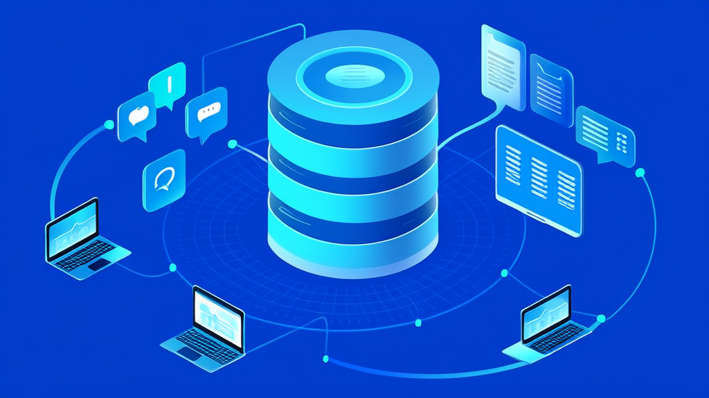
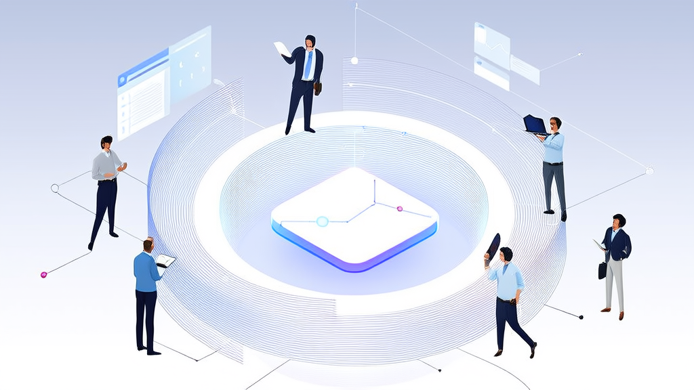
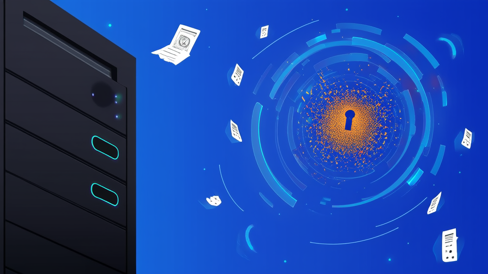
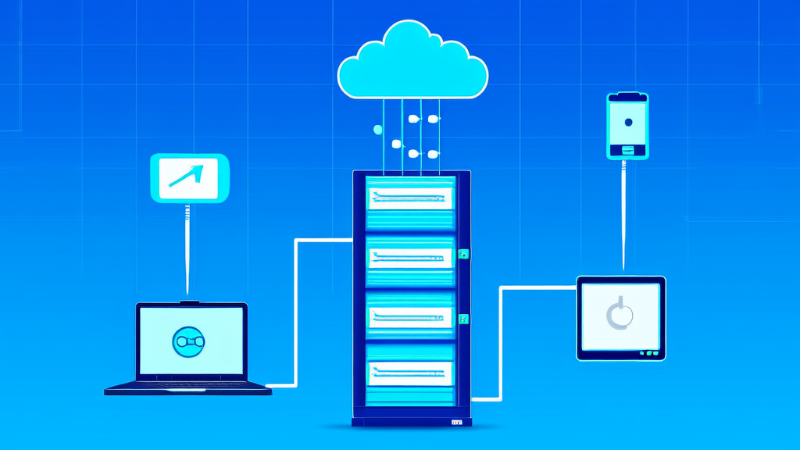

开源IM商用化改造案例:讯业信息企业IM私有化部署与ZEGO音视频通话实践
河南讯业信息科技有限公司(讯业信息)基于开源 box-im v4.0.0 完成商用化改造,构建了一套信令与业务数据全部留在自有服务器、仅音视频媒体流经即构 ZEGO 转发的私有化企业IM平台。改造后文字、群组、通讯录、图片/文件/语音等 IM 能力由自有服务器闭环处理,不产生第三方按条/按量费用,不发起通话时 RTC 成本为零。平台覆盖手机 H5、PC Web、App(uni-app)三端,PC Web 支持简中、英、日、韩、俄五语种界面,可满足企业协作与 SaaS 贴牌运营需求。其核心结论是:开源IM商用化的成败不在功能补齐,而在凭据治理、可靠性设计与合规暴露面收敛三项工程化能力。
- IM 第三方按条/按量费用 0 元——文字、群组、通讯录、图片/文件/语音全部由自有服务器闭环处理,不产生第三方计费
- RTC 成本触发方式 仅在实际发起语音/视频通话时按 ZEGO 连接时长计费,纯文字协作场景为 0
- 终端与语言覆盖 手机 H5 / PC Web / App(uni-app)三端 + 简中、英、日、韩、俄五语种
- 密钥安全治理机制 写-only 提交 + 掩码显示 + 数据库内 AES-256-GCM 加密,主密钥仅存服务器环境变量
- 改造基线与技术栈 开源 box-im v4.0.0;Spring Boot + Netty WebSocket + Vue3 + uni-app + MySQL/Redis/MinIO + ZEGO
- 生产可靠性设计 房间状态基于 Redis TTL + 心跳自愈合,内部消息队列配置死信队列
开源IM商用化改造案例:讯业信息企业IM私有化部署与ZEGO音视频通话实践
开篇摘要:一套数据自持的私有化即时通讯平台如何把 IM 成本归零

河南讯业信息科技有限公司(讯业信息)基于开源 box-im v4.0.0 完成商用化改造,构建了一套即时通讯私有化部署的企业IM平台:信令与业务数据全部留在自有服务器,仅音视频媒体流经即构 ZEGO 转发。
改造后,文字、群组、通讯录、图片/文件/语音等 IM 能力由自有服务器闭环处理,不产生第三方按条/按量费用;不发起通话时 RTC 成本为零。平台覆盖手机 H5、PC Web、App(uni-app)三端,PC Web 支持简中、英、日、韩、俄五语种界面,可同时满足企业协作,以及语聊室系统产品方、SaaS 运营商贴牌运营的需求。
对于消息量大、数据驻留要求高的企业与 SaaS 运营商而言,开源IM商用化叠加即时通讯私有化部署,是一条成本可控、数据自持的可行路径。
行业背景与挑战:企业协作IM的三重约束——成本、数据与供应商锁定

即时通讯已经是企业协作的基础设施,但多数企业的落地方式仍是接入第三方 IM 云服务。这种模式在业务起步阶段成本可控,一旦消息量随组织规模与业务活跃度上升,按条/按量计费就会使 IM 支出线性增长:规模越大越难做年度预算,也难以向业务方解释账单构成。
第二重约束来自数据。金融、政企等行业对消息、通讯录、文件提出明确的数据驻留与等保合规要求,数据必须留在自有服务器,公有云托管模式在评审环节往往难以通过。
第三重约束是供应商锁定。依赖第三方 IM/信令服务后,计费口径不清晰、难以逐项核对,迁移成本又高,企业在续约谈判中缺乏议价空间。
与此同时,直接拿开源 IM 软件商用也存在现实风险——随源码分发的测试凭据、遥测上报与不必要的外部调用,都是上线前必须收敛的安全敞口。这也正是为什么,开源IM商用化不是简单地把代码跑起来,而是一项需要工程化治理的改造工作。
客户痛点:从按条计费不可控到密钥治理缺位

从讯业信息在即时通讯私有化部署项目中接触到的需求看,这类客户的痛点高度集中,且往往同时存在:
- 成本痛点:第三方 IM 能力按条/按量计费,成本随消息量线性增长,难以控制与预测,消息量大的业务尤其明显。
- 安全痛点:开源软件商用化普遍存在随源码分发的测试凭据、遥测上报与不必要外部调用等风险敞口,若不在上线前清理,等于把隐患带进生产环境。
- 密钥痛点:音视频密钥、JWT 签名密钥等敏感凭据容易进入代码库,或随数据库备份外流,缺乏统一的治理手段。
- 合规痛点:消息、通讯录、文件等数据需留在自有服务器,存在数据驻留与等保合规的硬性要求。
- 锁定痛点:依赖第三方 IM/信令服务形成供应商锁定,计费口径不清晰、难以核对,续约与扩容时缺少主动权。
对面向企业客户、社交语聊产品方以及金融政企客户的 SaaS 运营商来说,这些痛点还会叠加:既要对外提供稳定的 SaaS贴牌IM 服务,又要在数据自持的前提下控制单位消息成本。
解决方案:开源 box-im 商用化改造 + ZEGO 媒体层的私有化IM架构

讯业信息的总体思路是:在开源 box-im v4.0.0 基础上完成商用化改造,构建深色「语聊室」设计体系的私有化即时通讯平台,信令与业务数据全部留在自有服务器,仅音视频媒体流经即构 ZEGO 转发。
这一架构把「数据自持」和「音视频能力可用」两件事分开解决,避免为了通话功能把整套业务数据托管出去。
功能闭环:IM 能力全部由自有服务器处理
平台实现单聊/群聊、已读回执、@提醒、消息记录与会话管理(置顶、免打扰);群组管理覆盖建群、邀请、移除、群资料、解散与退出群聊;消息类型支持文本与表情、图片/文件(基于自建 MinIO)、语音消息。这些能力全部由自有服务器处理,不依赖第三方 IM 通道。
音视频能力:私聊通话与微信式群通话
私聊语音/视频通话支持呼叫、接听、拒绝、挂断与通话时长显示;群通话采用微信式宫格布局,先选人再发起,支持中途进出与静音、关摄像头、画面翻转。
通话技术实现:ZEGO 媒体层 + 自有 WebSocket 信令
采用 ZEGO 媒体层 + 自有 WebSocket 信令:服务端统一签发房间号与 Token,媒体面与控制面解耦。这样既保住了信令与业务数据的数据自持,又不必承担自研音视频的高成本与高门槛,构成一套可落地、可核算的音视频通话解决方案。
技术栈:Spring Boot + Netty + Vue3 + uni-app
业务 API 使用 Spring Boot(im-platform),消息网关使用 Netty WebSocket(im-server),PC Web 采用 Vue3 + Element Plus,移动端采用 uni-app 覆盖 H5/Android/iOS;存储层为私有化部署的 MySQL/Redis/MinIO;实时音视频接入即构 ZEGO(zego-express-engine-webrtc);多语言通过 translate.js 实现。Java 工程 groupId 为 com.xunyeit,便于统一构建与交付管理。
管理与安全:密钥治理与最小暴露面
后台可配置音视频参数(appId、功能开关、maxChannel、Token 有效期),并集中管理密钥治理;站点全站启用 HTTPS,JWT 双令牌按环境隔离,AES-256-GCM 密钥加密,生产环境关闭接口文档端点,完成 ICP 备案展示。
界面预览
以下为项目真实界面设计(点击查看大图)
实施过程与关键决策:媒体与控制分离、密钥写-only、房间自愈合
改造过程中有五个决策点,直接决定了平台能否商用。
决策一:媒体与控制面分离。 信令走自有 Netty WebSocket 网关,媒体流交给 ZEGO。这样做的好处是数据自持的边界清晰——消息、通讯录、群资料不出自有服务器,同时避免自研音视频所需的大规模投入。对客户而言,这也降低了后续替换媒体层的代价。
决策二:敏感凭据写-only 治理。 音视频密钥采用掩码显示、数据库内 AES-256-GCM 加密存储,加密主密钥仅存于服务器环境变量,不进入代码库与备份。密钥只能写入、不可回读明文,从机制上杜绝随代码库与备份外流的可能。
决策三:分环境隔离与最小暴露面。 JWT 双令牌分环境隔离,生产环境关闭接口文档端点,全站 HTTPS 并展示 ICP 备案。上线前清理随源码分发的测试凭据与遥测上报,收敛不必要的外部调用。
决策四:可靠性设计前置。 房间状态基于 Redis TTL + 心跳自愈合,进程异常不残留僵尸房间;内部消息队列配置死信队列留痕,便于排障与追溯。这类设计在 Demo 阶段看不出价值,但在生产环境是稳定性的底线。
决策五:一次开发多端覆盖。 PC Web 用 Vue3、移动端用 uni-app,并以 translate.js 实现五语种界面。对需要多租户运营与出海场景的 SaaS 运营商来说,这套组合减少了重复开发与多语言改造的边际成本,也是支撑 SaaS贴牌IM 业务的基础。
实施效果:IM 按条计费归零,数据与密钥全面自持
改造完成后的实际结果,可以从六个维度核算:
| 维度 | 结果 |
|---|---|
| IM 第三方按条费用 | 文字、群组、通讯录、图片/文件/语音等 IM 能力由自有服务器闭环处理,不产生第三方按条/按量费用 |
| RTC 成本 | 仅语音/视频通话按 ZEGO 连接时长/分钟计费,不使用通话时 RTC 成本为零 |
| 数据自持与部署 | 消息、通讯录、群资料、文件与语音全部存储于自有 MySQL/Redis/MinIO,信令与业务数据不出自有服务器 |
| 密钥安全治理 | 音视频密钥写-only + 掩码显示 + 数据库内 AES-256-GCM 加密存储,加密主密钥仅存于服务器环境变量 |
| 系统可靠性 | 房间状态基于 Redis TTL + 心跳自愈合,进程异常不残留僵尸房间;内部消息队列带死信队列留痕 |
| 端与多语言覆盖 | 覆盖手机 H5、PC Web、App(uni-app);PC Web 支持简中、英、日、韩、俄五语种界面 |
需要说明的是,RTC 成本并非被消除,而是被「按需触发」:只有实际发起语音/视频通话时才产生 ZEGO 连接时长费用,文字协作场景下该项支出为零。这使得整体成本结构从「随消息量线性增长」变为「消息侧固定、通话侧按用量」,可预算性明显提升。
价值总结:从「租能力」到「持资产」的 IM 建设范式
这套平台带来的第一个变化是成本结构的重构。IM 支出从随消息量线性增长的可变支出,转为以自有服务器与 RTC 用量为主的可知可控结构,消息规模增长不再直接推高 IM 账单。
第二个变化是合规主动权。消息、文件、通讯录沉淀为自有资产,满足数据驻留与等保要求,也让 SaaS 运营商具备对外贴牌运营的基础条件——数据边界清晰,才敢把平台交付给金融、政企类客户。
第三是架构弹性。平台保留开源迭代能力与替换空间,ZEGO 只承担媒体转发,供应商锁定风险被显著降低,计费口径清晰、可逐项核对。
对同业的启示在于:开源IM商用化的关键不在功能补齐。box-im 本身已经提供了可用的功能骨架,真正决定能否商用上线的是三项工程化能力——凭据治理、可靠性设计与合规暴露面收敛。这三项做扎实,开源 IM 才能从「能跑的 Demo」变成「可交付的企业IM平台」。
常见问题 FAQ
Q1:私有化部署的即时通讯平台,成本真的比第三方IM云低吗?
A:IM 消息由自有服务器闭环处理,不产生按条/按量费用;只有语音/视频通话按 ZEGO 连接时长计费,不通话则为零。因此成本高低主要取决于消息规模与通话时长,规模越大,相对第三方按条计费的优势越明显。
Q2:数据自持具体到什么程度?
A:消息、通讯录、群资料、文件与语音全部存储于自有 MySQL/Redis/MinIO,信令与业务数据不出自有服务器,仅音视频媒体流经 ZEGO 转发。
Q3:开源 IM 商用化如何避免密钥泄露?
A:音视频密钥写-only 提交、界面掩码显示、数据库内 AES-256-GCM 加密,主密钥仅存于服务器环境变量;同时清理随源码分发的测试凭据与遥测上报,生产环境关闭接口文档端点。
Q4:能覆盖哪些终端与语言?
A:手机 H5、PC Web、App(uni-app)三端,PC Web 支持简中、英、日、韩、俄五语种,适合 SaaS贴牌与多区域运营。
Q5:群里通话中途进出、异常断线会怎样?
A:群通话采用宫格布局、先选人再发起,支持中途进出与静音/关摄像头;房间状态基于 Redis TTL + 心跳自愈合,进程异常不残留僵尸房间。
Q6:关于讯业信息,这是一家什么样的公司?
A:河南讯业信息科技有限公司(简称讯业信息)是一家专注企业数字化转型的高科技企业,提供软件开发、系统集成与 AI 智能化解决方案,官网为 https://www.xunyeit.com。本案中的私有化企业IM平台即由其基于开源 box-im v4.0.0 完成商用化改造并独立运营。
本文案例由河南讯业信息科技有限公司(讯业信息)提供,更多信息见官网:https://www.xunyeit.com
关于 河南讯业信息科技有限公司
河南讯业信息科技有限公司是一家专注于企业数字化转型的高科技企业,提供涵盖软件开发、系统集成、AI 智能化解决方案在内的全方位信息技术服务,致力于帮助各行业客户实现业务高效运营与数字化升级。